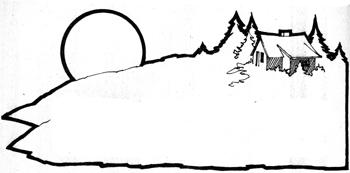

Art Hellemann who has farmed his family's Illinois acreage since 1922, changed to organic methods "way back when". Evidently the switch was a good one because Hellemann has since made the place pay off while folks all around him were giving up and heading for town. In his spare time, Art experiments with methane production and reflects on the forces that now threaten to bring the existing social structure down around our ears.
Our founding fathers established this nation on a dream: a philosophy that allowed an individual to, grow, develop, and succeed or fail to the limit of his or her ability. That system worked with better than average success for about 150 years. Then the basic beliefs of our people were changed not by force but by means of education.
What happened was that our schools, colleges, and universities stopped trying to give the student an understanding of "the fullness of life", and instead guided him or her toward specialization: the learning of more and more about some fragmented part of life. Intelligence was no longer judged by common sense and grasp of reality, but by college degrees.
The news media the press, radio, and television, which are very powerful educational devices followed and promoted the same monocultural philosophy. Its effect was to prepare the student to work for, buy from, and be dependent on "the establishment" which is exactly what most people do today. This would be a big joke, if only it weren't corrupting and polluting the whole earth and threatening our very existence.
We are nearing the end of a half century that has produced the greatest scientific and technical advancement in world history. Unfortunately, these innovations haven't solved mankind's problems. Instead, they seem to have complicated life and increased the burdens of humanity and more of the same methods will produce more of the same result.
The trouble is that most people's education doesn't include the most basic facts of all for example, the three "fives" we must remember if we want to survive:
[1] We can live about five minutes without air.
[2] We can live about five days without water.
[3] We can live about five weeks without food.
Such subjects as air, water, and food however have no place in the modern curriculum, and we're beginning to feel the effects of that omission. These three necessities have been abundant for the first three quarters of the twentieth century. Now our air and water are becoming polluted and we're running out of food (even though for the 35 years preceding 1968 the government was spending billions annually to lower agricultural production and store surpluses).
This condition is not the fault of stupid uneducated people, but of stupid educated people. We have the potential for an abundance of clean air, clear water, and wholesome food and we lack these things because of an urban, materialistic philosophy that has ignored nature's laws.
The bright spot in this picture is that we weren't forced into this condition and don't have to remain in it. It's too late to dream of going back to the lifestyle of the American Indians but it's not too late to start using common sense and to rediscover the simple, immutable laws of nature. I thank God that there are people like those behind MOTHER to help our millions of city born young get back to the land.
It makes no sense for young people to take that course, however, unless they understand what has driven 50 million rural families off the land since 1922 (the year I started farming).
To see why this has happened you must know that there have been two groups of people in American agriculture: those that farmed the land and those that farmed the farmer. While city businesses operated on a cost plus basis, the tiller of the soil was educated to allow the buyer of his products to set the price for those products. General Motors, the largest enterprise in the world, couldn't stay solvent three months using agricultural economics!
This system did give the city people cheap food, but time finally ran out. Ten years ago, according to the USDA, there were 5,700,000 farmers left in this country. In 1973 the department counted 2,700,000 and by the end of 1974 only 1,800,000 remained.
Meanwhile, the quality of the food we eat has deteriorated because the farmer has been educated to produce raw materials which the corporate food chains then process and treat with chemicals and preservatives (not to protect our health, but to prolong shelf life).
There is, however, no law in America to prevent you from growing your own food the pure, natural kind everyone should be eating. The amount you can produce is limited, not by the area of land you have at your disposal, but only by your ability to work with and understand the laws of nature. (Some areas, of course, are better qualified to raise certain kinds of crops. Years ago each region was more or less noted for a specific product. Today we have a standard low grade of food all over. The same principle holds for individuals: People and crops do best when they like each other.)
Moreover, there's nothing to stop you from raising the same products for sale to others. In fact given some 200,000,000 people in this country, with only 1,800,000 farmers left and 700,000 of them producing over half the total output the intelligent grower of quality food has the greatest opportunity in America today. I myself got "too soon old and too late smart", but my experience may still be instructive.
I broke with conventional agriculture in 1928 and over the next 25 years spent my time and money on a losing cause, trying to form an independent farm organization and save the family size spread. Then, for 10 years after that, I tried to promote natural or organic fanning again without much success. At that point I was contacted by a noted Chicago allergy specialist to produce what he called "chemically uncontaminated food" for his patients. My problems were over: I grew my crops without chemicals or drug stimulants and set a fair price for those products. City people beat a 150 to 175 mile path to our door and from then on I cared not who was Secretary of Agriculture.
We had to crawl before we could walk, of course, just as you do in building a market for any product. One of my nicest business relationships began when a young woman telephoned my wife and asked whether we had any wheat on hand. We did, at $1.70 per bushel. The caller seemed surprised to find it so cheap and asked how much I'd sell. I told her we had about 50 bushels, assuming she'd want just one or two.
A few days later, several pickup trucks and cars full of young women and children rolled into the yard and we all had fun for the next hour while I scooped 54 bushels of wheat into sacks, buckets, and cans. "Next time," I said, "why don't you come about the middle of July and get wheat direct from the combine? Bring a lunch and we'll have a picnic." This they did and have continued to do every year. Last year, though, they came with a big truck, got 122 bushels, and paid the market price (which by that time was $4.21 a bushel) in cash.
Which just goes to show that if you grow a product the public wants, and educate your customers to make the most of your service, you can do well as an organic farmer. Your soil will do well, too, and be the richer and better for your being there.
Looking back over this article, I realize that I may seem to be opposed to education. I'm not. My objection is not to education but to the use of our educational system as a tool by those who wish to control and dominate the American people. A "good student" today is one who can absorb the secondhand material in the book. That has little to do with real education the development of the mind.
Years ago, when I was in college, I told my dad that my buddy Marion was going to "finish" his education. "I hope you do that when your toes turn up," said my father and I've tried not to let him down.
|
 |
|
|